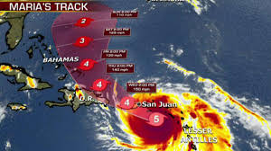
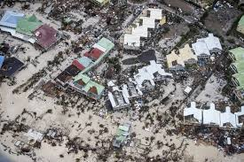

Hurricane Maria
Hurricane Maria was a deadly Category 5 hurricane that devastated the northeastern Caribbean in September 2017, particularly Dominica, Saint Croix, and Puerto Rico. It is regarded as the worst natural disaster in recorded history to affect those islands. The most intense tropical cyclone worldwide in 2017, Maria was the thirteenth named storm, eighth consecutive hurricane, fourth major hurricane, second Category 5 hurricane, and deadliest storm of the extremely active 2017 Atlantic hurricane season. Maria was the deadliest Atlantic hurricane since Mitch in 1998, and the tenth most intense Atlantic hurricane on record. Total monetary losses are estimated at upwards of $91.61 billion (2017 USD), mostly in Puerto Rico, ranking it as the third-costliest tropical cyclone on record.
Storm History
Maria became a tropical storm on September 16 east of the Lesser Antilles and rapidly intensified to Category 5 strength just before making landfall on Dominica on September 18. After crossing the island, Maria achieved its peak intensity with maximum sustained winds of 175 mph (280 km/h) and a pressure of 908 mbar (hPa; 26.81 inHg). On September 20, an eyewall replacement cycle weakened Maria to a high-end Category 4 hurricane by the time it struck Puerto Rico. Passing north of The Bahamas, Maria gradually degraded and weakened, swinging eastward over the open Atlantic and dissipating by October 2.
Damages & Facts
- Category 5 Hurricane
- 175 mph (280 km/h))
- Hurricane Maria Damage Estimate of $102 Billion
- An official death toll of 58
